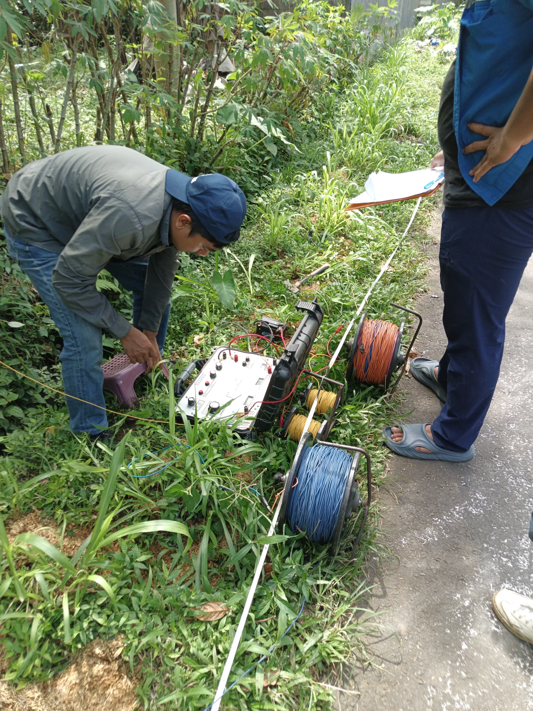
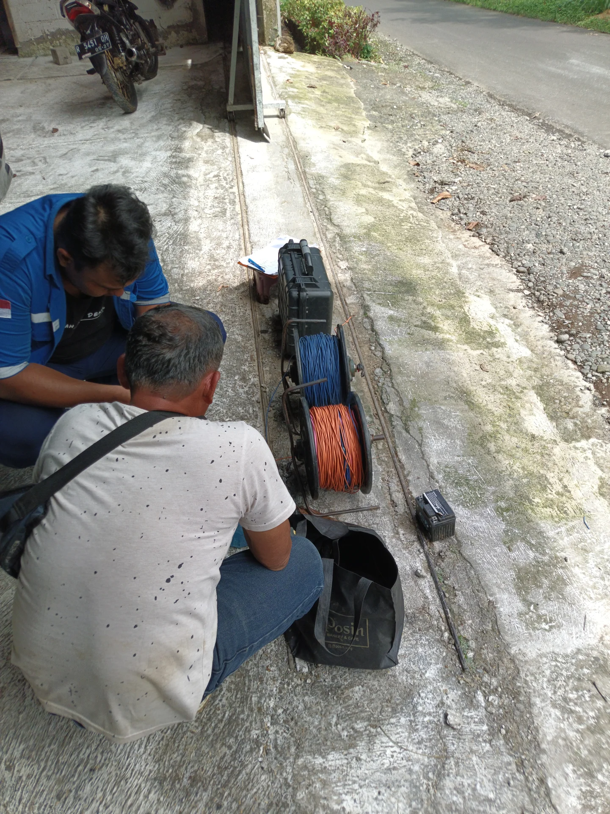
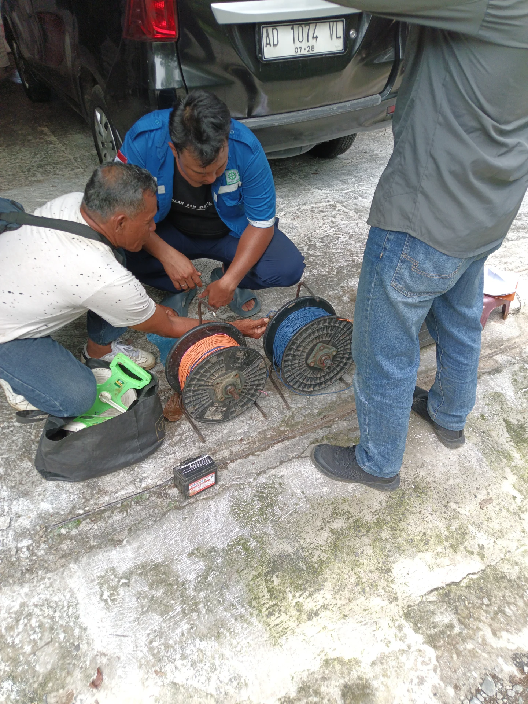
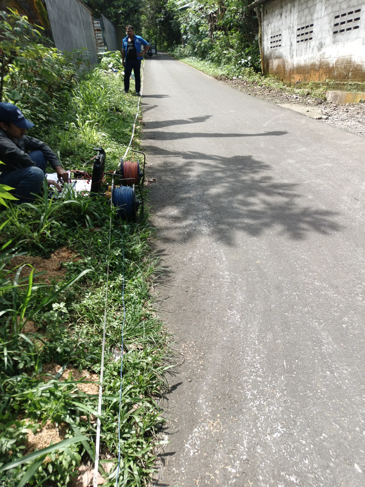
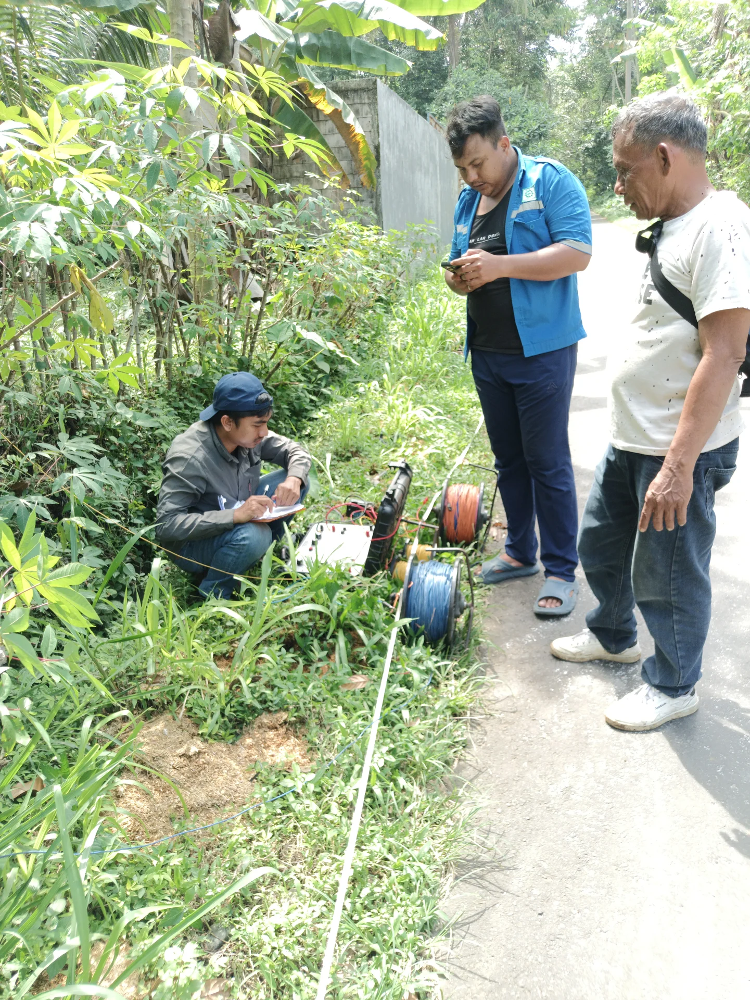
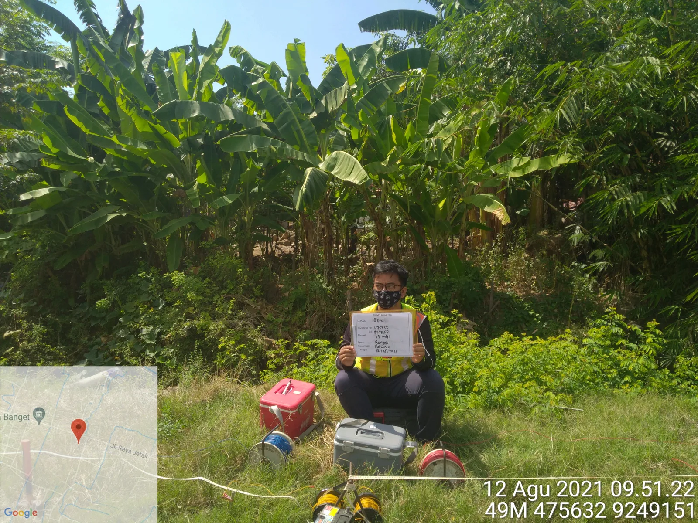
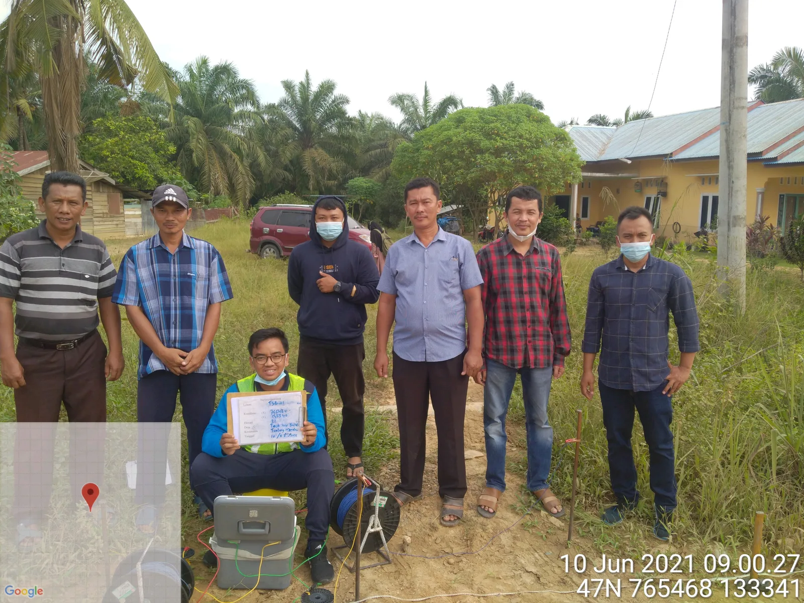
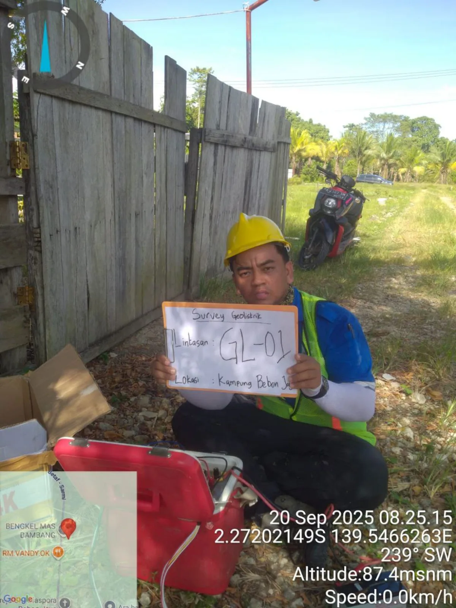
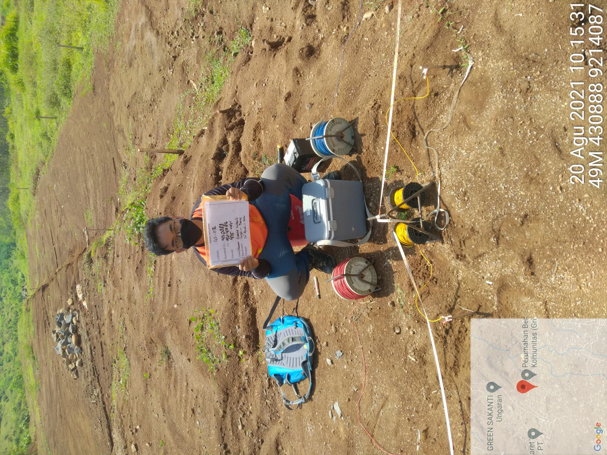

Solusi rekayasa kebumian terpadu: pemetaan posisi akuifer 2D sebelum pengeboran, konstruksi deep well industri berkapasitas tembus batuan kompak hingga 200 meter, uji tanah sondir CPT & boring SPT resmi PBG, serta legalitas izin SIPA ESDM di seluruh Indonesia.

Setiap kebutuhan memiliki tantangan mekanik dan kepatuhan regulasi yang berbeda. Temukan pendekatan teknis yang sesuai dengan target proyek Anda.
Geodipo membangun sumur bor akuifer tertekan (*confined aquifer*) kedalaman 30 sampai 60 meter. Dilengkapi konstruksi *grouting* semen pelindung kontaminasi dan saringan pasir silika untuk menjamin pasokan air bening 24 jam.
Penyelidikan tanah cepat dan akurat: pengujian sondir CPT 2.5 ton hingga tanah keras (*refusal qc ≥ 200 kg/cm²*) serta deep boring SPT dengan sampel tabung UDS. Draf laporan teknis siap dalam 2–3 hari kerja.
Konstruksi sumur bor industri kedalaman 100–200+ meter pipa baja GIP medium, pengujian geolistrik 2D, borehole logging, step-drawdown pumping test 72 jam, serta pendampingan izin resmi SIPA via OSS RBA.
Layanan komprehensif mulai dari pemetaan geofisika non-destruktif, konstruksi sumur dalam, pengujian mekanika tanah fondasi, hingga legalitas pemanfaatan air resmi negara.

Investigasi tahanan jenis 1D VES dan pemetaan 2D ERT untuk mendeteksi sebaran lapisan batupasir pembawa air, batas air asin, dan patahan sebelum pengeboran.

Pengeboran sumur air tanah dalam (30 hingga 200+ meter) dengan armada rotary mud drilling dan DTH Hammer berkapasitas tembus formasi batuan keras masif.

Uji tanah sondir CPT 2.5 ton dan pemboran mesin putar SPT untuk penentuan daya dukung tanah, evaluasi penurunan fondasi gedung, dan syarat resmi PBG/SLF.

Pendampingan perizinan pemanfaatan air tanah resmi Kementerian ESDM dan sistem OSS RBA untuk kawasan industri, hotel, rumah sakit, dan gedung bertingkat.
Pendekatan saintifik yang sistematis untuk memastikan setiap rupiah investasi pengeboran dan fondasi Anda menghasilkan data akurat dan pasokan air terukur.
Evaluasi data sekunder formasi batuan regional, status Cekungan Air Tanah (CAT), dan riwayat sumur bor eksisting di sekitar lokasi proyek.
Akuisisi data resistivitas geolistrik 2D multi-elektroda atau pengujian sondir CPT 2.5 ton langsung di titik rencana konstruksi.
Pengeboran menggunakan rig hidraulik rotary mud atau DTH hammer, instalasi pipa casing AW SNI, gravel pack silika, dan grouting semen.
Uji pemompaan step-drawdown dan recovery test kontinu untuk mengukur debit optimum aman (*safe yield*) serta penurunan muka air tanah.
Penyusunan laporan komprehensif ber-SKA untuk izin PBG/SIMBG PUPR atau pengurusan berkas izin pemanfaatan air tanah resmi ke ESDM.
Bukan klaim tanpa dasar. Berikut adalah dokumentasi lapangan dan studi kasus penanganan litologi spesifik dari Jawa, Sumatera, hingga Papua.

Identifikasi lapisan pembawa air tanah tawar pada elevasi 35 mdpl untuk mengatasi masalah air payau pesisir pada formasi endapan aluvial pantai.

Pencarian akuifer di bawah lapisan gambut asam tebal dan lempung liat lunak untuk penyediaan air bersih warga perkebunan kelapa sawit.

Pengukuran lintasan GL-01 metode Wenner dengan pencatatan raw data sheet elektroda C1-P1-P2-C2 pada elevasi 87.4 msnm untuk proyek sarana air bersih daerah.

Penyelidikan geolistrik resistivitas sounding untuk mendeteksi rekahan lava andesit dan batupasir tufaan penyimpan air tanah bersih di lereng perbukitan.
Investasi sumur bor dan penyelidikan tanah ditujukan untuk ketahanan puluhan tahun. Hindari kerugian finansial akibat tebak-tebakan tanpa landasan sains kebumian.
| Parameter Pekerjaan | Rekayasa Teknik Geodipo | Tukang Bor Konvensional |
|---|---|---|
| Penentuan Titik Bor | Berdasarkan data geologi Cekungan Air Tanah (CAT) & survei geolistrik ilmiah | Menebak dengan kawat tembaga, kelapa, atau insting tanpa data ilmiah |
| Kualitas Pipa Casing | Pipa PVC Kelas AW Tebal (Standar JIS tahan 10 kg/cm²) atau Baja GIP SNI | Pipa PVC tipis kelas D atau C yang rentan pecah terjepit geseran tanah |
| Saringan Pasir (Screen) | Pipa saringan pabrik presisi + gravel pack pasir silika bundar | Paralon digergaji manual tidak rata, memicu pasir hisap dan pompa rusak |
| Penyekat Kontaminasi | Semen grouting (0–12m) menyekat air resapan kotor dan limbah septik tank | Dibiarkan tanpa semen, air limbah permukaan bebas mencemari sumur |
| Penetrasi Batuan Keras | Armada DTH Hammer kompresor udara 25 bar siap tembus breksi andesit masif | Mesin modifikasi kecil, pekerjaan macet dan ditinggal saat mentok batu |
| Pertanggungjawaban Teknis | Didampingi sarjana geologi / hidrogeologi berlisensi SKA resmi HATTI | Hanya tukang gali borongan tanpa dasar jaminan kepastian ilmiah |
Dari sentra industri Jabodetabek, Jawa Barat, Jawa Tengah, Jawa Timur, hingga pulau Sumatera, Kalimantan, Sulawesi dan Papua—tim Geodipo siap memobilisasi peralatan ke lokasi proyek Anda.
Jawaban transparan mengenai faktor biaya per meter, akurasi geolistrik, persyaratan izin SIPA, dan kepatuhan SIMBG PUPR.